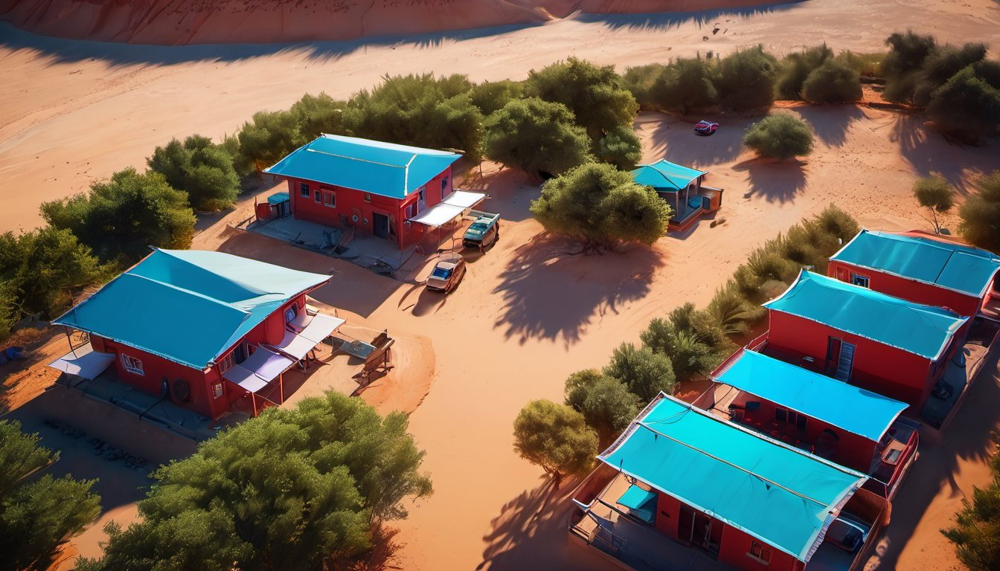
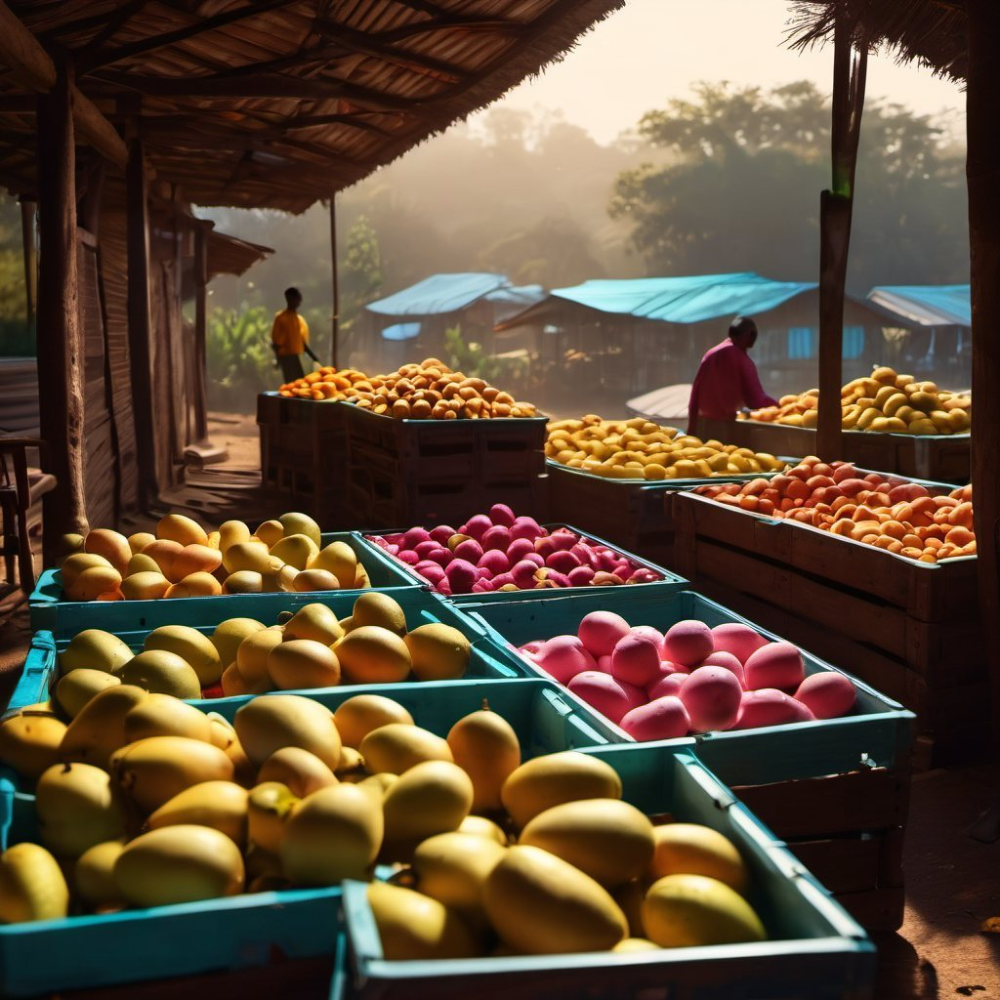
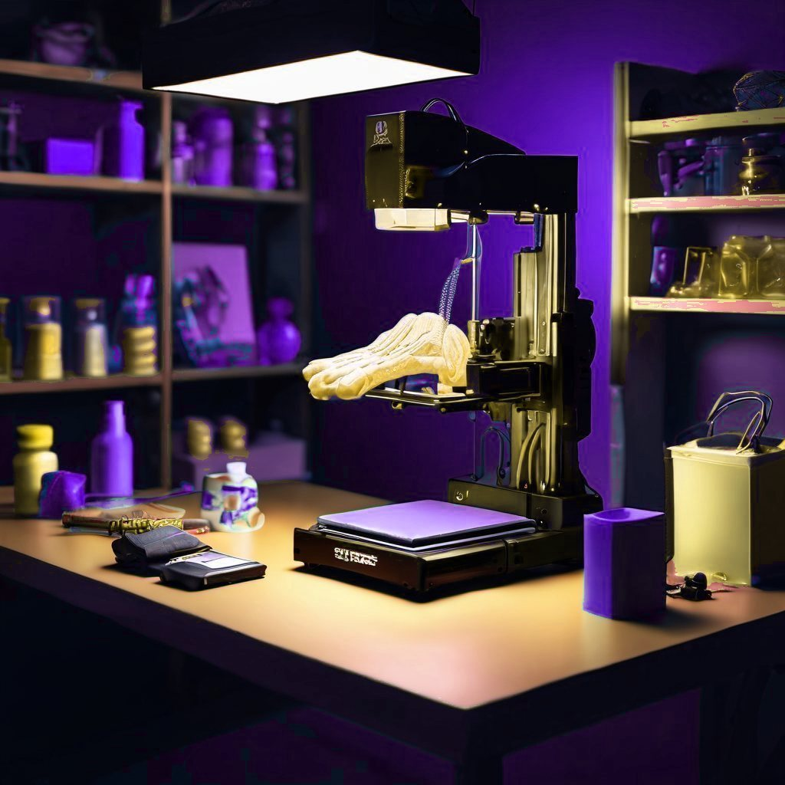

Phase 1 — L'intelligence & le virtuel
Finaliser le jumeau numérique et l'intelligence artificielle qui écoute le cerveau et les muscles. Tout est publié en open source : c'est notre banc d'essai, et il servira à d'autres.
Ni un hôpital, ni une ferme, ni un atelier : les trois ensemble. Un lieu où l'on rééduque, où l'on cultive, où l'on fabrique — et où les enfants handicapés et les femmes ne sont pas des bénéficiaires, mais des bâtisseurs.

Hybride entre l'Institut du Dr Nicolelis et le Centre Songhaï : la science d'un côté, l'autonomie agricole et artisanale de l'autre. Ce qui se reproduit, c'est le protocole.
Une équipe locale existe déjà, et l'Architecte y a vécu en 2015 puis en 2024. On ne débarque pas : on rejoint.
Les enfants handicapés et les femmes d'abord. Le reste du centre est construit autour de cette promesse, pas à côté.

Une personne plus un métier égale une famille sauvée !
Les trois phases du projet
Finaliser le jumeau numérique et l'intelligence artificielle qui écoute le cerveau et les muscles. Tout est publié en open source : c'est notre banc d'essai, et il servira à d'autres.
Lever les fonds, puis partir en Chine, à la source du matériel, pour trouver des associés industriels et fabriquer l'Exo-Robot réel ainsi que les équipements de l'Îlot Intégré.
Implanter et démarrer le premier modèle d'ONG réplicable à Madagascar, à proximité stratégique de l'Asie pour l'approvisionnement, et déployer cette technologie sur le terrain.
Comment ça se finance, durablement
Circuit court entre les territoires où le projet est présent et l'Europe.
Production, transformation, stockage : la valeur reste sur place.
Impression 3D, prothèses et pièces d'exosquelette, formées sur place.
Les revenus du virtuel paient le réel : contenu, audience, affiliation.
Sur place
Les enfants handicapés et les femmes d'abord. Le reste du centre est construit autour de cette promesse, pas à côté.

